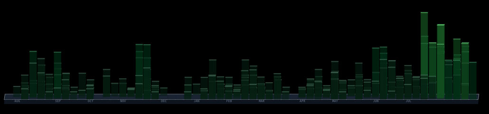
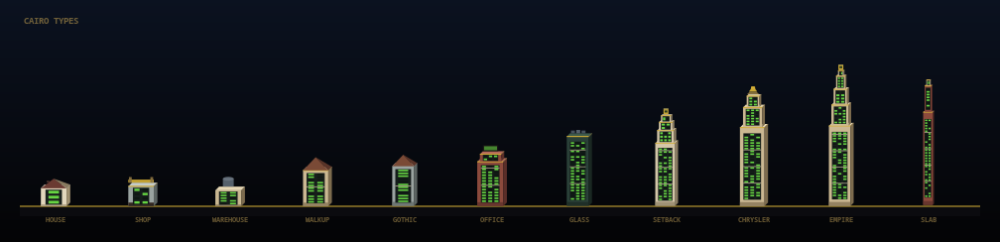
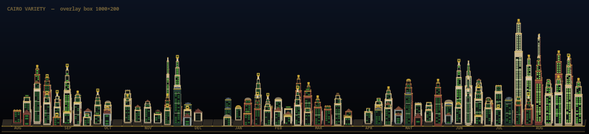
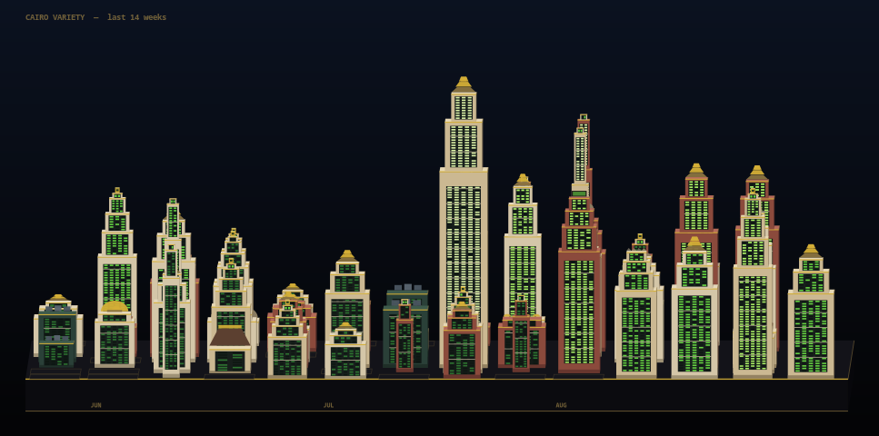
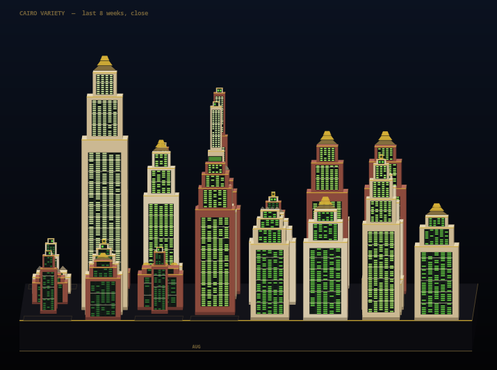

Cairo variety on the live overlay camera. Quiet days are houses and shops. Busy days are Empire / Chrysler / setback towers. PixelLab did not survive this camera. Reload if the tab is stale.




